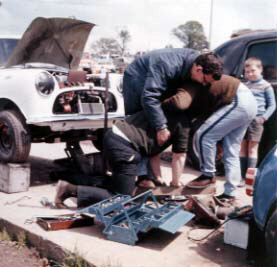

Minis and
Kids Love Each Other !

The Snorty Cartoon that Started the Discussion
Send your Minis and Kiddies Stories to rock@rocky-frisco.com

Stories About Minis and Kids

From Captain Ken:
Many years ago, when my 997 cooper was new, we went out for a run in it, on
a Sunday afternoon, and as we got home Lilian had to go in, in a hurry, and
I was bringing in the baby, (he's 39 now!). The phone rang, and I went
through the front door to answer it. Meanwhile, my Mum, who was staying with
us, shut the front door, and we sat down to our meal. When it was over,
Lilian went upstairs and he was missing!! Panic!!-But we found him, enjoying a
nice sleep, still in the Mini, with a very happy look on his face...
...nuff said??

The B/W picture is Gawaine (the baby) a few years later, still in his natural
element, amid Minis and playing with spanners. He is still a 'spanner man,'
as Chief Engineer for Total Oil Marine's North Sea projects

The colour picture is at Mallory Park doing an impromptu clutch change. It
shows our eldest son Duncan Kenneth who only ever wanted to be a Mini racer
or an Astronaut, but died aged 9 shortly after this pic.
Cheers
Ken
From Simon Dummett:
Way back when, in '74 when I was conceived, til the day I was born, my Dad
had a Traveller and I would travel in this (or rather, my mother would).
When I was kicking, which was often (or so my Mum says), they would drive
around for a bit in the Traveller and I'd calm down again. It never worked
in any other car. I reckon that's where I get my interest from.
Then, Dad blew the head gasket once too often going from Catterick in North
Yorkshire to Salisbury in Wiltshire (c.350 miles), trying to get back for
when I was born. Net result was that the head and block were both cracked
and I ended up going home from the hospital in an Austin 1300.
I then spent the rest of my childhood in an Austin Maxi or two. Just like a
grown up younger brother to the Mini, but not the one I wanted to be in ;-)
-Simon
From David Piacentini:
My favorite story with my kids and my mini came last summer when a
neighborhood kid offered "all the money in my piggy bank if you let me drive
it!" My son's response is a classic. He said to the other little boy "It's
a REAL CAR! You can't drive it; IT'S A REAL CAR!!!!!
Cheers,
Dave,
From Rocky
My two daughters spent many weekends at the two major tracks in Ontario, Canada: Mosport
and Harewood Acres, since I was racing a Morris 850 in those days. We would get up very early
on the morning of the practice day and I would fold myself into some blankets in the back seat while
the kids would share the passenger seat and my wife, Yvonne, would drive us to the track. We would
then camp out at the track until the racing was over.

Here's my Dad and my daughters at Harewood Acres in 1965
From Simon Dummett:
(Simon's comment about "lightening the air" refers to the recent news that our hero, John Cooper, died on Christmas Eve. 2000.)
Just thought I'd try and lighten the air a little with a "kids & Minis" story which is only a few hours old.
I was stood in the queue at a McDonalds restaurant on the A1 motorway near Newark, on Christmas Eve. The woman in front of me has two children with her, a girl aged maybe 7 and a boy aged about 4.
I have a red Mini belt buckle which often breaks the ice - you should see how many women you catch staring "down there" when they see it.
The girl had been looking around the restaurant and did a double take, then a triple take, then nudged the boy and pointed at the belt buckle. He looked at it and without hesitation shouted "Miniiiiiiiiiiiiiiiiiiiiiii!"
Rocky adds: "When I had to take my web pages down, during the trouble last spring, one of my friends had to ask for a CD of the Mini animations off my web page. He said his baby son was *very* unhappy when he wasn't able to see the Minis."